The Reference Manual is the base document. The Owner’s
Manual is a one-sheet summary of the same panel, connection,
recording, saving, setup, battery and specification pages; the
few lines only it carries are marked where they appear.
Before using this unit, carefully read the sections entitled
“USING THE UNIT SAFELY” and “IMPORTANT
NOTES” (supplied on a separate sheet). After reading, keep
the document(s) where it will be available for immediate
reference. From the Owner’s Manual.
Panel Descriptions
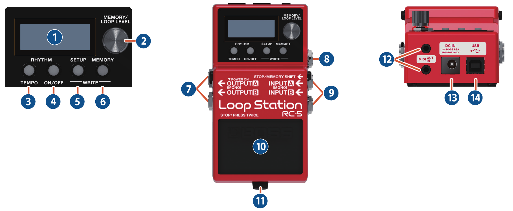
Name
Explanation
1Display
Shows various information of the RC-5.
During recording/playback/overdubbing, the color of the
screen changes according to the status.
Lit blue
No phrase
Lit red
Recording
Lit green
Playing
Lit yellow
Overdubbing
Lit white
Phrase exists
2[MEMORY/LOOP LEVEL] knob
Play screen
Turning
Selects a memory (01–99) or adjusts the volume of the track (LOOP LEVEL).
Pressing
Switches between selecting a memory and adjusting the volume of the track (LOOP LEVEL).
When editing
Turning
Selects a parameter or changes a value.
Pressing
Specifies the parameter to edit. Alternatively, confirms an operation.
Turn while pressing
Changes a value in larger steps.
3RHYTHM [TEMPO] button
Press to specify the tempo of the rhythm.
You can also set the tempo by pressing the button at the desired interval (tap tempo).
4RHYTHM [ON/OFF] button
The rhythm switches on (lit)/off (unlit)/ready to play rhythm (blink) each time you press the button.
You can record while listening to a rhythm at the tempo you specify.
Long press the button (two seconds or longer) to select rhythm settings mode.
5[SETUP] button
Lets you make settings that affect the entire RC-5 (the function of a footswitch or expression pedal connected to this unit, and system settings).
6[MEMORY] button
Lets you make settings related to loop playback and recording, rhythm settings, and memory name settings.
If the track of the selected memory is already recorded, the button is lit green.
By pressing the [SETUP] button and [MEMORY] button simultaneously, you can save a memory (write) or erase (clear) memory data.
7OUTPUT jacks A (MONO), B
Connect these jacks to your amp or monitor speakers.
If you’re using a mono setup, use only the A (MONO) jack. Even sound that is input in stereo is output in mono.
The OUTPUT A (MONO) jack doubles as the power switch. Power to the unit is turned on when you plug into the OUTPUT A (MONO) jack; the power is turned off when the cable is unplugged. When you are not using the unit, pull the plug out of the OUTPUT A (MONO) jack.
8STOP/MEMORY SHIFT jack
Connect a separately sold footswitch or expression pedal to this jack.
This lets you control a variety of functions: you can use a footswitch to stop recording/playback/overdubbing or to switch memories, and you can use an expression pedal to operate various parameters.
Connect your guitar/bass or effect unit to these jacks.
Use the A (MONO) jack and B jack when connecting a stereo-output effects unit. Use only the A (MONO) jack if you’re using a mono source.
10Pedal switch
This pedal switches you between phrase recording, playback, and overdubbing. Press the pedal twice in succession to stop playback.
Hold down the pedal two seconds or longer during playback or overdubbing to Undo (cancel the recording or the last overdubbing). Hold down the switch once again for two seconds or longer to Redo (cancel the Undo).
Hold down the pedal two seconds or longer while stopped to clear the recorded phrase.
MEMO
You can assign other functions to the pedal switch.
To make these connections, use TRS/MIDI connecting cables (sold separately: BMIDI-5-35).
This lets you control an external MIDI device from this unit via MIDI.
13DC IN jack
Accepts connection of an AC adaptor (PSA series; sold separately). By using an AC adaptor, you can play without being concerned about how much battery power you have left.
Use only the specified AC adaptor (PSA series).
If the AC adaptor is connected while a battery is installed, the power supply is drawn from the AC adaptor.
14USB port
You can connect your computer here and use it to back up or recover data.
How the RC-5 Is Organized
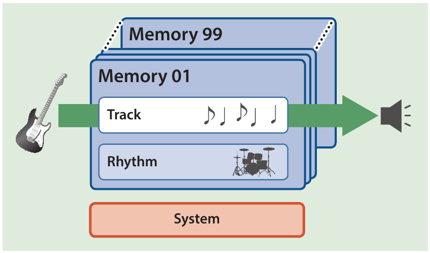
Track
Record and play back audio from an instrument such as guitar.
Rhythm
In addition to the track, the RC-5 can also play a “Rhythm.”
You can record while listening to a rhythm at the tempo you specify.
Memory
The one track, together with the “rhythm” settings, are collectively called a “memory.”
The RC-5 can store up to 99 memories.
System
Settings that are common to the entire RC-5, such as the display contrast adjustment and MIDI settings, are called “system settings.”
“Recording” versus “Overdubbing”
In this manual, we refer to the act of recording to an empty track for the first time as “recording.”
Any subsequent recordings that are made, which are added on top of the existing recording, we refer to as “overdubbing.”
Play screen
The screen that appears after you turn on the power is called the “Play screen.”
01Memory 01
Connecting the Equipment
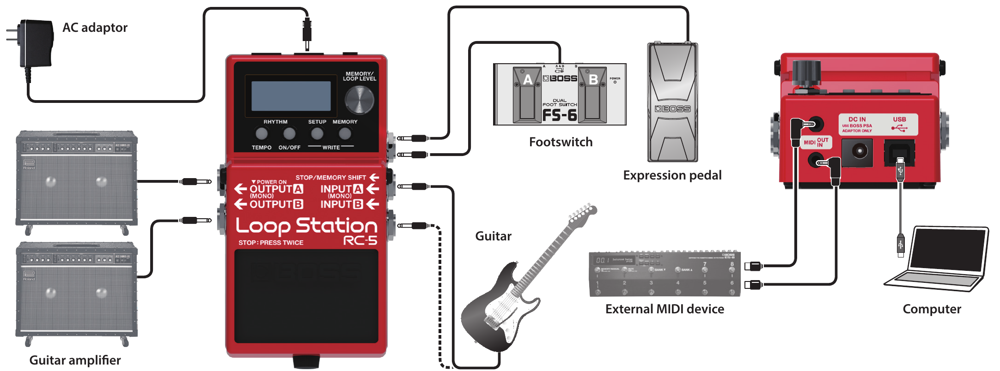
To prevent malfunction and equipment failure, always turn down the volume, and turn off all the units before making any connections.
Use only the specified expression pedal (FV-500H, FV-500L, EV-30, and Roland EV-5; sold separately). By connecting any other expression pedals, you risk causing malfunction and/or damage to the unit.
NOTE
When connecting an external pedal, you must turn off the power before connecting or disconnecting cables. Failure to observe this precaution will cause malfunctions.
Connecting a footswitch
Connect a footswitch or switches and set their mode/polarity switches by referring to the illustrations below.
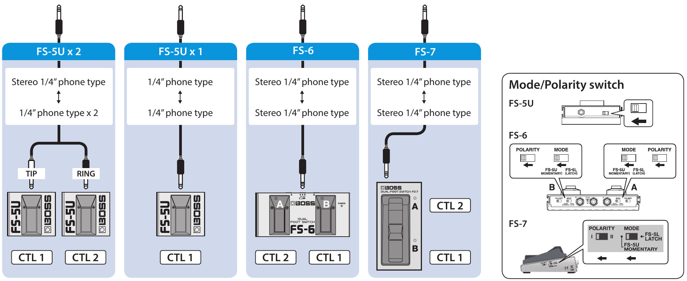
Turning the Power On/Off
The OUTPUT A (MONO) jack doubles as the power switch. Power to the unit is turned on when you plug into the OUTPUT A (MONO) jack; the power is turned off when the cable is unplugged. When you are not using the unit, pull the plug out of the OUTPUT A (MONO) jack.
Before turning the unit on/off, always be sure to turn the volume down. Even with the volume turned down, you might hear some sound when switching the unit on/off. However, this is normal and does not indicate a malfunction.
When powering up:
Turn on the power to your amp last.
When powering down:
Turn off the power to your amp first.
Creating a Loop Phrase
Recording
Getting ready to record
Turn the [MEMORY/LOOP LEVEL] knob to select a memory.
01Memory 01Memory nameLarge digits: memory number
Screen
Status
Blue
Empty track
White
Track contains data
Basic operation
▶ PressRecording
Screen: Lit red
Record your guitar performance.
▶ PressPlayback
Screen: Lit green
Play back a phrase as a loop.
Pressing the pedal switches the unit to overdubbing.
▶ PressOverdubbing
Screen: Lit yellow
Layer your performances while the phrase plays as a loop.
Pressing the pedal switches the unit to playback.
Technique for stopping
Example: When you want to stop at the end of a measure with a 4/4 time signature
Press the pedal one time at the beginning of the fourth beat, then press it again at the beginning of the first beat of the next measure.
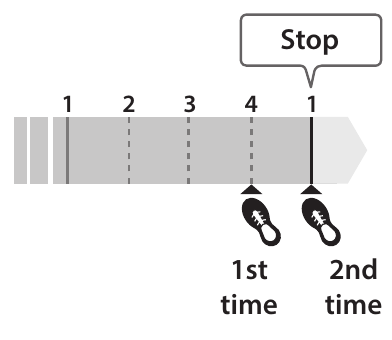
▶ Press twiceStop
Screen: Lit white
During overdubbing or loop playback, you can stop by pressing the pedal twice in succession.
Press the pedal twice within one second.
NOTE
The maximum recording time is approximately 1.5 hours for one track, and approximately 13 hours total for all memories. If you exceed the maximum recording time, recording or overdubbing ends at that point, and the unit switches to loop playback.
Undo/Redo
Hold down the pedal two seconds or longer during playback or overdubbing to Undo (cancel the recording or the last overdubbing). Hold down the switch once again for two seconds or longer to Redo (cancel the Undo).
Clear
Hold down the pedal two seconds or longer while stopped to clear the recorded phrase.
Record While Listening to the Rhythm Sound
In addition to the track, the RC-5 can also play a “Rhythm.”
By recording while you listen to a rhythm at the tempo you’ve specified, you can record at an accurate tempo.
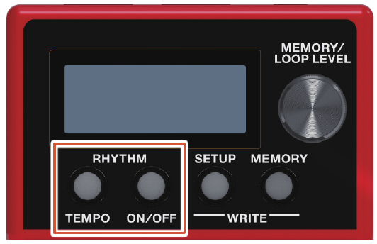
Sounding a Rhythm
Press the RHYTHM [ON/OFF] button.
The rhythm switches on (lit)/off (unlit)/ready to play rhythm (blink) each time you press the button.
The specified tempo can be saved as a setting in memory.
While the tempo setting screen is shown, turn the [MEMORY/LOOP LEVEL] knob to set the tempo.
Value
40.0–300.0
Tap tempo
You can set the tempo by pressing a button at the desired interval.
Press the RHYTHM [TEMPO] button several times in time with the desired tempo.
MEMO
If you long press the RHYTHM [TEMPO] button (two seconds or longer), the tempo returns to the default value.
Saving a Memory
Saving a Memory (WRITE)
If you select a different memory or turn off the power after recording or editing the settings, the recorded content or edited settings will be lost. If you want to keep the data, you must save it.
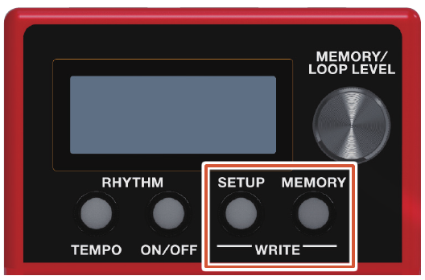
Press the [SETUP] button and [MEMORY] button simultaneously.
The UTILITY screen appears.
UTILITY▸WRITE
Turn the [MEMORY/LOOP LEVEL] knob to select “WRITE,” and press the [MEMORY/LOOP LEVEL] knob.
▸WRITE:01Memory01Save-destination memoryMemory name
Turn the [MEMORY/LOOP LEVEL] knob to select the save-destination memory.
You can skip this step if you want to save to the currently selected memory.
If you decide to cancel, press one of the RHYTHM [TEMPO]–[MEMORY] buttons.
Press the [MEMORY/LOOP LEVEL] knob.
The memory will be saved.
Do not turn off the power while the “EXECUTING...” message is shown.
MEMO
You can assign a name to the memory. For details, refer to NAME.
Erasing Data from a Memory (CLEAR)
You can erase the data that is saved in a memory, clearing that memory to an empty state.
Press the [SETUP] button and [MEMORY] button simultaneously.
The UTILITY screen appears.
UTILITY▸WRITE
Turn the [MEMORY/LOOP LEVEL] knob to select “CLEAR,” and press the [MEMORY/LOOP LEVEL] knob.
▸CLEAR:01Memory01Memory to be clearedMemory name
Turn the [MEMORY/LOOP LEVEL] knob to select the memory that you want to clear.
You can skip this step if you want to clear the currently selected memory.
If you decide to cancel, press one of the RHYTHM [TEMPO]–[MEMORY] buttons.
Press the [MEMORY/LOOP LEVEL] knob.
The memory will be cleared.
Do not turn off the power while the “EXECUTING...” message is shown.
Editing a Memory
Editing the Settings of a Memory
Here’s how to edit the settings of each memory.
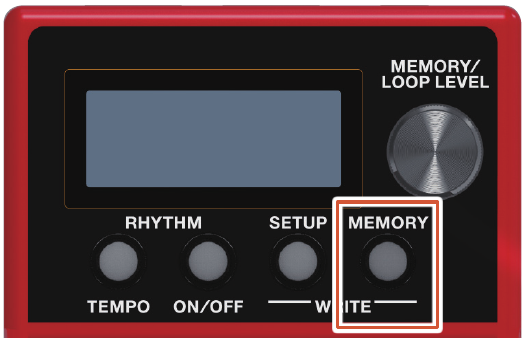
Select the memory that you want to edit.
Press the [MEMORY] button.
The memory settings screen appears.
MEMORY▸LOOPItem
Turn the [MEMORY/LOOP LEVEL] knob to select the item that you want to edit, and press the [MEMORY/LOOP LEVEL] knob.
▸LEVEL100ParameterValue
Turn the [MEMORY/LOOP LEVEL] knob to select the parameter that you want to edit, and press the [MEMORY/LOOP LEVEL] knob.
START▸IMMEDIATE
Turn the [MEMORY/LOOP LEVEL] knob to change the value.
Press the [MEMORY] button to return to the play screen.
If you want to save the edited settings, execute the Write operation.
Editing the Rhythm Settings
Rhythm parameters can also be edited from the edit screens for a memory.
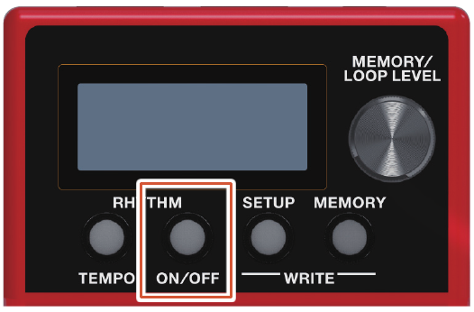
Select the memory for which you want to edit the rhythm settings.
Long press the RHYTHM [ON/OFF] button.
The rhythm settings screen appears.
▸LEVEL100ParameterValue
Turn the [MEMORY/LOOP LEVEL] knob to select the parameter that you want to edit, and press the [MEMORY/LOOP LEVEL] knob.
REVERB▸50
Turn the [MEMORY/LOOP LEVEL] knob to change the value, and press the [MEMORY/LOOP LEVEL] knob.
Repeat steps 3–4 to edit the parameter that you want.
Long press the RHYTHM [ON/OFF] button to return to the play screen.
If you want to save the edited settings, execute the Write operation.
MEMO
By executing the Write operation while in the rhythm play-standby or rhythm play condition, you can save/recall the memory as a “rhythm: on” memory.
MEMORY Parameters
LOOP
Parameter
Value (Bold: default)
Explanation
REVERSE
OFF, ON
Specifies conventional playback (OFF) or reverse playback (ON).
When REVERSE is set to “ON,” you won’t be able to switch to overdubbing after a recording has been completed.
1SHOT
Specifies whether the track playback will be one-shot or not one-shot (conventional loop playback).
OFF
Conventional loop playback.
ON
The phrase will play only once from the beginning to the end of the track, and then stop automatically (One-Shot Playback).
If you press the pedal switch during playback, playback will begin again from the beginning of the track (Retrigger Playback). Overdubbing cannot be carried out.
LEVEL
0–100–200
Adjusts the playback level of the track.
You can also use the [MEMORY/LOOP LEVEL] knob to adjust the playback level.
REC ACTION
Specifies the order in which record/playback/overdub are switched when you press the pedal switch.
REC->DUB
Operation will switch in the order of Recording → Overdubbing → Playback.
REC->PLAY
Operation will switch in the order of Recording → Playback → Overdubbing.
DUB MODE
Specifies the overdubbing method.
OVERDUB
The new performance is layered onto the prerecorded track.
If overdub is repeated, the next performance is layered on top of the previous material, allowing you to create an ensemble in a single track.
REPLACE
Track with existing recordings is overwritten as new track is recorded over them.
Overwriting takes place while the previously recorded track is played back, allowing you to achieve a kind of delay effect similar to that obtained from an effects processor.
AUTO REC
“AUTO REC” (auto record) starts recording when there is audio input from your guitar performance.
OFF
Recording will begin the instant you press the pedal switch.
ON
The display shows that you have entered record standby mode when you press the pedal switch. Once you start playing, the display shows that you are now in recording mode, and recording begins.
START
Specifies whether playback starts with a fade-in or immediately when the track plays.
IMMEDIATE
Playback starts immediately.
FADE IN
Playback starts while fading in.
You can use “FADE TIME” to specify the length of the fade-in.
STOP
Specifies how the track will stop when you press the pedal switch.
You can’t overdub during the time until playback stops.
IMMEDIATE
Playback will stop immediately.
FADE OUT
Playback will fade out and then stop.
You can use “FADE TIME” to specify the length of the fade-out.
LOOP END
Playback will continue to the end of the loop, and then stop.
FADE TIME
1/16, 1/8, 1/4, 1/2 note, 1MEAS–2MEAS–64MEAS
Specifies the fade-in/out time as a number of measures when START is set to “FADE IN” or STOP is set to “FADE OUT.”
MEASURE
You can specify the number of measures for a track.
When recording along with rhythm sounds, it’s convenient to specify the number of measures before you record, so that looping will occur at the specified measure length, even if you don’t operate the switch when you’ve finished recording.
FREE
The number of measures will be set automatically, corresponding to the length of the recording.
1MEAS–
The number of measures will be set manually.
RHYTHM
Parameter
Value (Bold: default)
Explanation
LEVEL
0–100–200
Adjusts the volume of the rhythm.
REVERB
0–30–100
Adjusts the depth of the reverb applied to the rhythm.
Specifies the timing at which the rhythm pattern variation is switched.
MEASURE
Play to the end of the measure and then switch.
LOOP END
Play to the end of the loop and then switch.
KIT
Selects the drum kit that is used for rhythm playback.
Studio, Rock, Jazz, Brush, Cajon, R&B, 808+909
BEAT
2/4–4/4–7/4, 5/8–15/8
Selects the rhythm beat.
You cannot change the beat after the track is recorded. Be sure to set this before recording.
START
Specifies how rhythm playback starts.
LOOP START
The rhythm plays when loop recording or playback starts.
REC END
The rhythm plays when loop recording ends and switches to playback.
This is useful if you want to perform without specifying a tempo, then start recording, and then play the loop in time with the rhythm when playback starts.
BEFORE LOOP
The rhythm plays before loop recording or playback.
The rhythm starts playing when you press the switch once, and recording/playback starts in time with the rhythm when you press the switch once again.
STOP
Specifies how rhythm playback stops.
OFF
The rhythm always continues playing.
If you are performing in synchronization with an external MIDI device, you can keep the rhythm playing continuously to allow synchronized playback.
LOOP STOP
The rhythm stops when the loop stops.
REC END
The rhythm stops when loop recording ends.
This is useful when you want to use the rhythm as a guide during recording.
REC COUNT
Specifies whether a count-in is heard for recording.
A count-in won’t be sounded when a track or rhythm is being played back.
OFF
No count-in is played.
1MEAS
Recording starts after a one-measure count-in is played.
PLAY COUNT
Specifies whether a count-in is heard for playback.
OFF
No count-in is played.
1MEAS
Playback starts after a one-measure count-in is played.
FILL
OFF, ON
Specifies whether the rhythm plays with a fill-in (ON) or without a fill-in (OFF).
PART1–4
OFF, ON (PART1–3) OFF, ON (PART4)
For each of the four drum parts (PART 1–4) that make up the drum kit, these settings specify whether the drum sound is heard (ON) or not heard (OFF).
TONE LOW
-10–0–10
Adjusts the low-frequency tonal character of the rhythm sound.
TONE HIGH
-10–0–10
Adjusts the high-frequency tonal character of the rhythm sound.
NAME
Parameter
Value (Bold: default)
Explanation
NAME
Specifies the memory name.
Maximum of 12 characters
Turn the [MEMORY/LOOP LEVEL] knob to move the cursor to the position at which you want to enter a character, and then press the [MEMORY/LOOP LEVEL] knob.
NAME▸SONG 0█
Turn the [MEMORY/LOOP LEVEL] knob to select a character, and then press the [MEMORY/LOOP LEVEL] knob.
NAME▸SONG 02
Settings for the Entire RC-5 (SETUP)
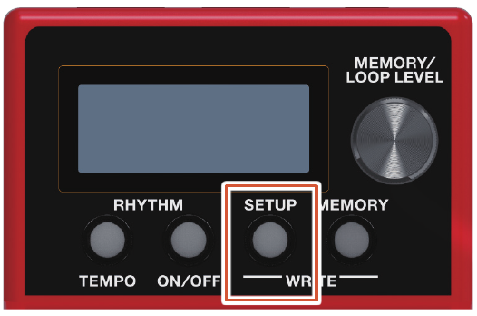
Press the [SETUP] button.
The SETUP screen appears.
SETUP▸GENERALItem
Turn the [MEMORY/LOOP LEVEL] knob to select the item that you want to edit, and press the [MEMORY/LOOP LEVEL] knob.
▸DISP MODELOOPParameterValue
Turn the [MEMORY/LOOP LEVEL] knob to select the parameter that you want to edit, and press the [MEMORY/LOOP LEVEL] knob.
DISP CONT▸5
Turn the [MEMORY/LOOP LEVEL] knob to change the value.
Press the [SETUP] button to return to the play screen.
SETUP Parameters
GENERAL
Parameter
Value (Bold: default)
Explanation
DISP CONT
1–5–10
Adjusts the display contrast.
DISP MODE
Specify what is shown in the screen during recording, playback, and overdubbing.
STATUS
Show “REC” during recording, “PLAY” during playback, and “DUB” during overdubbing
POSITION
Show the progress of recording/playback/overdubbing
STATUS+POS
Upper line: STATUS indication Lower line: POSITION indication
NUMBER+POS
Upper line: Show the memory number Lower line: POSITION indication
NAME+POS
Upper line: Show the memory name Lower line: POSITION indication
BEAT+POS
Upper line: Show the time signature of the rhythm Lower line: POSITION indication
BEAT
Show the time signature of the rhythm
M.EXT MIN
01–99
Specify the extent in which memories can be switched (lower limit: MIN / upper limit: MAX).
M.EXT MAX
01–99
UNDO/REDO
Specify the timing at which undo/redo is executed.
This parameter is valid if a function that allows undo/redo by long pressing the switch is assigned as the PEDAL FUNC or CTL1–2 FUNC (CONTROL) setting.
HOLD
Execute undo/redo while you hold down the switch.
RELEASE
Execute undo/redo the moment you release the switch.
CONTROL
Parameter
Value (Bold: default)
Explanation
PEDAL FUNC CTL1 FUNC CTL2 FUNC
Specify the functions of the pedal switch, and a footswitch (CTL1, CTL2) connected to the STOP/MEMORY SHIFT jack.
TRK REC/PLY
Switch between record/play/overdubbing for track.
Long press (two seconds or longer) the switch during playback or overdubbing to Undo, long press the switch once again to Redo.
TRK R/P/S
Switch between record/play/stop (press the switch twice) for track.
Long press (two seconds or longer) the switch during recording or playback to Undo, long press the switch once again to Redo.
TRK R/P/S(C (PEDAL)
Switch between record/play/stop (press the switch twice) for track.
Long press (two seconds or longer) the switch during recording or playback to Undo, long press the switch once again to Redo.
Long press (two seconds or longer) the switch while stopped to clear the track.
TRK MOM R/P
Put track in record/play only while you hold down the switch.
TRK PLY/STP
Switch between play/stop for track.
TRK P/S(CLR
Switch between play/stop for track.
Long press (two seconds or longer) the switch during recording or playback to Undo, long press the switch once again to Redo.
Long press (two seconds or longer) the switch while stopped to clear the track.
TRK STOP
Stop record/play for track.
TRK STOP(TAP
Stop record/play for track.
Specify the tempo (tap tempo) by pressing the switch several times at the desired interval while stopped.
TRK STOP(CLR (CTL1)
Stop record/play for track.
Long press (two seconds or longer) the switch while stopped to clear the track.
TRK STOP(T/C
Stop record/play for track.
Specify the tempo (tap tempo) by pressing the switch several times at the desired interval while stopped.
Long press (two seconds or longer) the switch while stopped to clear the track.
TRK CLEAR
Clear the track.
TRK UND/RED
Undo/redo recording or the most recent overdubbing for track.
TRK REVERSE
Turn reverse play on/off for track.
TAP TEMPO
Press the switch several times at the desired interval to specify the tempo.
Long press the switch (two seconds or longer) to return to the previous tempo.
RHYTHM P/S
Switch the rhythm between play/stop.
RHYTHM PLAY
Play the rhythm.
RHYTHM STOP
Stop playing the rhythm.
MEMORY INC (CTL2)
Switch to the next memory.
MEMORY DEC
Switch to the previous memory.
EXP FUNC
Specifies the function of an expression pedal connected to the STOP/MEMORY SHIFT jack.
TRK LEVEL1
Control the volume of track (LOOP LEVEL) in the range of 0–200.
TRK LEVEL2
Control the level in the range of 0–“maximum value,” with the LOOP LEVEL setting of track as the maximum value.
TEMPO UP
Press the pedal to make the tempo faster.
TEMPO DOWN
Press the pedal to make the tempo slower.
RHYTHM LEV1
Control the “LEVEL” of memory/RHYTHM in the range of 0–200.
RHYTHM LEV2
Control the level in the range of 0–“maximum value,” with the “LEVEL” setting of memory/RHYTHM as the maximum value.
MEMORY LEV1
Control the “LEVEL” of memory/LOOP in the range of 0–200.
MEMORY LEV2
Control the level in the range of 0–“maximum value,” with the “LEVEL” setting of memory/LOOP as the maximum value.
This sets the functions that are controlled when a control change message (controller numbers 80–87) is received from an external MIDI device.
OFF
No function is assigned.
TRK PLY/STP
Switch between play/stop for track.
TRK CLEAR
Clear the track.
TRK UND/RED
Undo/redo recording or the most recent overdubbing for track.
TRK REVERSE
Turn reverse play on/off for track.
TRK LEVEL1
Control the volume of track (LOOP LEVEL) in the range of 0–200.
TRK LEVEL2
Control the level in the range of 0–“maximum value,” with the LOOP LEVEL setting of track as the maximum value.
TAP TEMPO
Press the switch several times at the desired interval to specify the tempo.
Long press the switch (two seconds or longer) to return to the previous tempo.
TEMPO UP
Press the pedal to make the tempo faster.
TEMPO DOWN
Press the pedal to make the tempo slower.
RHYTHM P/S
Switch the rhythm between play/stop.
RHYTHM PLAY
Play the rhythm.
RHYTHM STOP
Stop playing the rhythm.
RHYTHM LEV1
Control the “LEVEL” of memory/RHYTHM in the range of 0–200.
RHYTHM LEV2
Control the level in the range of 0–“maximum value,” with the “LEVEL” setting of memory/RHYTHM as the maximum value.
MEMORY INC
Switch to the next memory.
MEMORY DEC
Switch to the previous memory.
MEMORY LEV1
Control the “LEVEL” of memory/LOOP in the range of 0–200.
MEMORY LEV2
Control the level in the range of 0–“maximum value,” with the “LEVEL” setting of memory/LOOP as the maximum value.
TRK REVERSE
Control “REVERSE” of memory/LOOP.
TRK 1SHOT
Control “1SHOT” of memory/LOOP.
REC ACTION
Control “REC ACTION” of memory/LOOP.
DUB MODE
Control “DUB MODE” of memory/LOOP.
AUTO REC
Control “AUTO REC” of memory/LOOP.
TRK START
Control “START” of memory/LOOP.
TRK STOP
Control “STOP” of memory/LOOP.
FADE TIME
Control “FADE TIME” of memory/LOOP.
REVERB
Control “REVERB” of memory/RHYTHM.
PATTERN
Control “PATTERN” of memory/RHYTHM.
VARIATION
Control “VARIATION” of memory/RHYTHM.
VAR.CHANGE
Control “VAR.CHANGE” of memory/RHYTHM.
KIT
Control “KIT” of memory/RHYTHM.
RHY START
Control “START” of memory/RHYTHM.
RHY STOP
Control “STOP” of memory/RHYTHM.
REC COUNT
Control “REC COUNT” of memory/RHYTHM.
PLAY COUNT
Control “PLAY COUNT” of memory/RHYTHM.
RHY FILL
Control “FILL” of memory/RHYTHM.
RHY PART1–4
Control “PART1”–“PART4” of memory/RHYTHM.
TONE LOW
Control “TONE LOW” of memory/RHYTHM.
TONE HIGH
Control “TONE HIGH” of memory/RHYTHM.
MIDI
Parameter
Value (Bold: default)
Explanation
RX CTL CH
1–16
Specifies the receive channel for messages (control changes) that switch memories or control the RC-5.
OMNI
Specifies MIDI omni mode.
OFF
Messages will be received only on the channel specified by the RX CTL CH setting.
ON
Messages are received via all MIDI channels, regardless of the RX CTL CH settings.
RX NOTE CH
1–10–16
Specifies the receive channel for note messages that play the RC-5’s drum sounds.
TX CH
1–16, RX CTL
Specifies the MIDI transmit channel.
If this is “RX CTL,” the channel will be the same as the RX CTL CH.
SYNC CLOCK
Specifies the input to which the tempo clock is synchronized.
AUTO
The RC-5 will normally operate using its internal tempo, but will synchronize the tempo to MIDI clock if MIDI clock data is being input via the MIDI IN connector or the USB port.
Choose the “AUTO” setting if using the RC-5 as a slave device.
The priority order is MIDI>USB>internal clock.
INTERNAL
The clock uses the tempo specified by the memory.
Choose the “INTERNAL” setting if you don’t want to synchronize the RC-5 to an external device.
USB
Synchronize to the tempo from the USB port.
MIDI
Synchronize to the tempo from the MIDI IN connector.
CLOCK OUT
OFF, ON
Specifies whether MIDI clock is transmitted (ON) or not transmitted (OFF).
SYNC START
Specifies what starts in synchronization when a MIDI start message is received.
OFF
Synchronized start does not occur.
ALL
Track + rhythm
RHYTHM
Rhythm
PC OUT
OFF, ON
Specifies whether program change messages are transmitted (ON) or not transmitted (OFF).
MIDI THRU USB THRU
Specifies the connector(s) from which MIDI messages received at the MIDI IN connector or the USB port are output.
OFF
MIDI messages are not output.
MIDI OUT
Output from the MIDI OUT connector.
USB OUT
Output from the USB port.
USB/MIDI
Output from the USB port and the MIDI OUT connector.
STORAGE
Parameter
Value (Bold: default)
Explanation
STORAGE
OFF, CONNECT
Change this from the OFF setting when connecting the RC-5 via USB to your computer.
When a connection with the computer is established, the message “CONNECTING...” appears.
F.RESET
Parameter
Value (Bold: default)
Explanation
F.RESET
Specifies the settings that will be returned to their factory-set state.
MEMORY
Memory 01–99
SYSTEM
System settings
MEM+SYS
Memory 01–99 and system settings
Connecting a Computer via USB
If the RC-5 is connected via USB to your computer, you’ll be able to do the following.
Back up the RC-5’s data to your computer.
Restore (recover) backed-up data from your computer to the RC-5.
Use BOSS TONE STUDIO to import or back up loop phrases (audio files).
To use BOSS TONE STUDIO
Access the following URL, and download BOSS TONE STUDIO.
Use a commercially available USB cable to connect the RC-5’s USB port to your computer’s USB port.
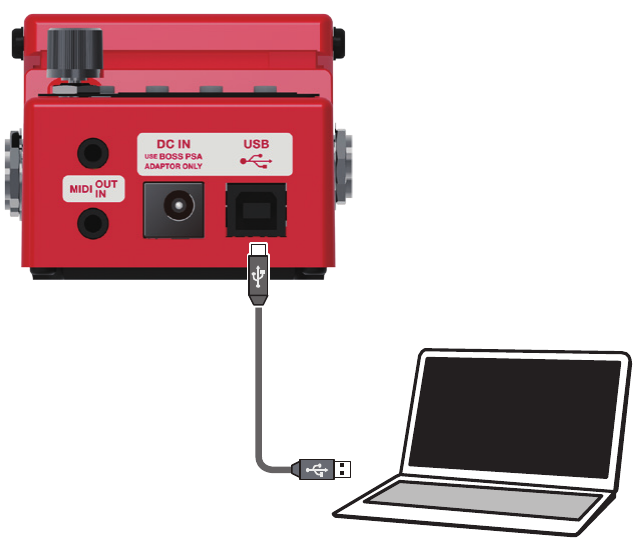
NOTE
Use a USB cable that supports USB 2.0 Hi-Speed.
This might not work correctly for some models of computer. Refer to the BOSS website for details on the operating systems that are supported.
Backing-Up or Recovering Data
Press the [SETUP] button.
The SETUP screen appears.
SETUP▸GENERAL
Turn the [MEMORY/LOOP LEVEL] knob to select “STORAGE,” and press the [MEMORY/LOOP LEVEL] knob.
STORAGE▸OFF
Turn the [MEMORY/LOOP LEVEL] knob to set “PREPARING...”.
Use a USB cable to connect the RC-5’s USB port to your computer’s USB port.
When a connection with the computer is established, the message “CONNECTING...” appears.
USB connection is not possible if the unit is not stopped, or if there is a phrase that has not been saved.
Open the BOSS RC-5 drive.
Windows
Within My Computer (or Computer), open “BOSS RC-5” (or Removable Disk).
Mac OS
On the desktop, open the “BOSS RC-5” icon.
Back up or recover the data.
Backup
Copy the entire “ROLAND” folder from the BOSS RC-5 drive to your computer.
Recover
When you execute this operation, the memory currently saved in the RC-5 disappears. Back up in advance.
In the BOSS RC-5 drive, delete the “ROLAND” folder, and then copy the backed-up “ROLAND” folder from the computer into the BOSS RC-5 drive.
NOTE
Do not delete the folders in the BOSS RC-5 drive other than when executing the recovery operation.
Eject the USB drive.
Windows
In the lower right of your screen, click the [^] icon → the drive icon, and then click “Eject BOSS RC-5.”
Mac OS
Drag the “BOSS RC-5” icon to the trash (“Eject” icon).
Controlling Devices via MIDI
Connection
MIDI cables are connected to these connectors as needed.
Connector
Explanation
MIDI IN
Receives messages from another MIDI device.
MIDI OUT
Transmits messages from this device.
To make these connections, use TRS/MIDI connecting cables (sold separately: BMIDI-5-35).
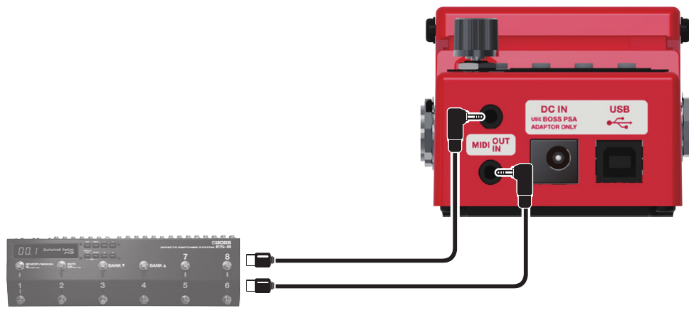
MIDI Settings
Use of MIDI requires that the MIDI channels be matched with those of the connected device. Data cannot be transmitted to, nor received from another MIDI device unless the MIDI channels are set properly.
For details on each of the MIDI setting parameters, refer to SETUP / MIDI.
Controlling an External MIDI Device from the RC-5
Overview
Explanation
Transmitting tempo data and data for starting and stopping playback
The RC-5’s performance tempo data is transmitted to external MIDI devices as MIDI Clock.
Setting an external MIDI device to the same tempo as the RC-5
MIDI Clock messages are output from the RC-5 at all times.
Set the external MIDI device beforehand so it is ready to receive MIDI Clock and MIDI Start and Stop messages.
For details, refer to the owner’s manual that came with the device.
Playback start and stop operations with the RC-5’s switches can be transmitted as MIDI Start and Stop messages.
Transmitting Start/Stop
A MIDI Start message is transmitted at the moment that recording or playback of the track begins, when tracks had been stopped.
This message is also transmitted when an All Start is carried out.
A MIDI Stop message is transmitted when tracks have stopped. This is also transmitted when All Stop is carried out.
If you want MIDI synchronized performance to continue even after the track stops, set the RHYTHM parameter STOP to “OFF.”
A track whose 1SHOT setting is “ON” will not transmit Start/Stop data.
Transmitting Program Change messages
When a memory is selected with the RC-5, a Program Change message corresponding to the selected memory number is transmitted simultaneously.
Transmitting Program Change messages
When memories are switched on the RC-5, a MIDI Program Change message is transmitted to the connected external MIDI device.
You can transmit Program Change messages numbered 01 through 99, corresponding to the 99 individual memories 1–99.
Program Change messages 100–128 cannot be transmitted.
Bank Select MIDI messages (Control Change #0, #32) cannot be transmitted.
Controlling the RC-5 from an External MIDI Device
Overview
Explanation
Receiving tempo data and data for starting and stopping playback
The RC-5 will synchronize to the tempo of MIDI Clock data from an external MIDI device.
Setting the RC-5 to the same tempo as an external MIDI device
Make settings on your external MIDI device so that it will transmit MIDI Clock and MIDI Start/Stop data. For details, refer to the owner’s manual of your device.
Start/stop data will be received from an external MIDI device to play/stop the RC-5.
Receiving MIDI Start
When MIDI Start (FA) is received, all tracks will play (All Start).
Switching memories
The RC-5’s memories switch simultaneously upon receipt of corresponding Program Change messages from external MIDI devices.
Switching memories
You can switch the RC-5’s memories with Program Change messages from external MIDI devices.
The RC-5 can receive Program Change messages numbered 01 through 99, corresponding to the 99 individual memories 1–99.
Program Change messages 100–128 cannot be received.
Even if received, Bank Select MIDI messages (Control Change #0, #32) are disregarded.
Receiving Control Change messages
The RC-5 can be controlled using Control Change messages from external MIDI devices.
Receiving Control Change messages
You can use Control Change messages from an external MIDI device to control functions that would be difficult to control using the RC-5’s own controllers.
Check whether an external expression pedal might have been used to adjust the level (CONTROL).
Has anything been recorded to the track?
Check the [MEMORY] button to see whether the track has been recorded. If the [MEMORY] button is unlit, nothing has been recorded.
No rhythm sound
Is RHYTHM LEVEL set correctly?
Check the “LEVEL” of memory/RHYTHM setting (RHYTHM).
Sound is missing from the beginning and end of the recorded track
To prevent noise, a fade-in and a fade-out are applied at the beginning and end of a recording. In some cases, it may sound as if some of the sound has been left out.
Problems with operation
Memories not switching
Is something other than the Play screen appearing in the display?
You cannot switch memories while any screen other than the Play screen is displayed. Press the [MEMORY] button to return to the Play screen.
Since the track is being played at a much faster tempo than when it was recorded, it might not play back correctly.
Adjust the tempo.
TEMPO TOO SLOW
Since the track is being played at a much slower tempo than when it was recorded, it might not play back correctly.
TOO BUSY TOO BUSY OMSG
The RC-5 could not process the data completely.
For “TOO BUSY OMSG”: Since you attempted to apply the loop FX to a phrase that was set to a significantly slower tempo than when it was recorded, the data could not be processed quickly enough.
Lower the performance tempo.
In the case of “TOO BUSY OMSG,” return to the tempo that was used during recording.
Save the current content to a memory.
If this appears frequently, back up the data to your computer, then execute factory reset “MEM+SYS,” and then recover the data.
UNDEFINED ERR
An error of unknown cause has occurred during recording, playback, or overdubbing.
Consult your Roland dealer or local Roland Service.
MIDI
BUFFER FULL
An excessive volume of messages were received and could not be processed properly.
Reduce the number or size of MIDI messages transmitted to the RC-5.
OFFLINE
There is a problem with the MIDI cable connection.
Check to make sure the cable has not been disconnected and that there is no short in the cable.
Others
BATTERY LOW
The battery has run down.
Replace the batteries, or use an AC adaptor.
BATTERY LOW!! STOP ALL
Because the battery has run down, the unit cannot function correctly.
All operations of the RC-5 have stopped.
MEMORY FULL
This unit’s memory is insufficient. If this message appears, recording or overdubbing might end mid-way.
To import an audio file into the RC-5, use “BOSS TONE STUDIO.”
Restoring the Factory Default Settings (Factory Reset)
Not only can you return all of the settings to the values in effect when the RC-5 was shipped from the factory, you can also specify the items to be reset.
When you execute “Factory Reset,” the settings you made will be lost. In advance, back up important data to your computer.
Press the [SETUP] button.
The SETUP screen appears.
SETUP▸GENERAL
Turn the [MEMORY/LOOP LEVEL] knob to select “F.RESET,” and press the [MEMORY/LOOP LEVEL] knob.
F.RESET▸MEMORY
Turn the [MEMORY/LOOP LEVEL] knob to specify the settings that will be returned to their factory-set state, and press the [MEMORY/LOOP LEVEL] knob.
Value
Explanation
MEMORY
Memory 1–99
SYSTEM
System settings
MEM+SYS
Memory 1–99 and system settings
A confirmation message “ARE YOU OK?” appears.
If you decide not to execute the factory reset, select “CANCEL” and press the [MEMORY/LOOP LEVEL] knob.
Turn the [MEMORY/LOOP LEVEL] knob to select “OK,” and press the [MEMORY/LOOP LEVEL] knob.
The factory reset is executed.
Do not turn off the power while the “EXECUTING...” message is shown.
Once the factory reset is complete, you are returned to the Play screen.
Changing the Battery
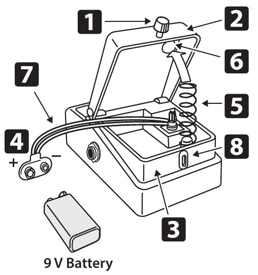
Hold down the pedal and loosen the thumbscrew 1, then open the pedal 2 upward.
The pedal can be opened without detaching the thumbscrew completely.
Remove the old battery from the battery housing 3, and remove the battery snap 4 connected to it.
Connect the battery snap to the new battery, and place the battery inside the battery housing.
Be sure to carefully observe the battery’s polarity (+ versus −).
Slip the coil spring 5 onto the spring base 6 on the back of the pedal, and then close the pedal.
Carefully avoid getting the battery snap cord 7 caught in the pedal, coil spring, and battery housing.
Insert the thumbscrew into the guide bush hole 8 and tighten it securely.
Main Specifications
Sampling Frequency
44.1 kHz
AD/DA Conversion
32 bits
Processing
32-bit floating point
Recording/Playback
Number of Tracks: 1 Data Format: WAV (44.1 kHz, 32-bit float, stereo) Maximum Recording Time: Approx. 1.5 hours (1 track), Approx. 13 hours (total of all memories)
Rhythm Type
57 Patterns x 2 Variations
Rhythm Kit
7 types
Effect
Reverb (only for rhythm part)
Memory
99
Nominal Input Level
INPUT A/MONO, B: -20 dBu
Input Impedance
INPUT A/MONO, B: 1 MΩ
Nominal Output Level
OUTPUT A/MONO, B: -20 dBu
Output Impedance
OUTPUT A/MONO, B: 1 kΩ
Recommended Load Impedance
OUTPUT A/MONO, B: 10 kΩ or greater
Bypass
Buffered bypass
Display
Graphic LCD (96 x 32 dots, RGB backlit LCD)
Connectors
INPUT A/MONO, B jacks: 1/4-inch phone type OUTPUT A/MONO, B jacks: 1/4-inch phone type STOP/MEMORY jack: 1/4-inch TRS phone type USB port: USB B type MIDI (IN, OUT) jacks: stereo miniature type DC IN jack
Power Supply
Alkaline battery (9 V, 6LR61 or 6LF22) AC adaptor (PSA series: sold separately)
Current Draw
170 mA
Expected battery life under continuous use
These figures will vary depending on the actual conditions of use. Alkaline: Approx. 2 hours
Dimensions
73 (W) x 129 (D) x 56 (H) mm 2-7/8 (W) x 5-1/8 (D) x 2-1/4 (H) inches
Weight
405 g/15 oz (excluding battery) 450 g/1 lb (including battery)
Accessories
Leaflet (“USING THE UNIT SAFELY,” “IMPORTANT NOTES,” and “Information”) Alkaline battery (9 V, 6LR61 or 6LF22)
Options (sold separately)
AC adaptor: PSA-S series Footswitch: FS-5U Dual Footswitch: FS-6, FS-7 Expression Pedal: FV-500H, FV-500L, EV-30, Roland EV-5 TRS/MIDI connecting cable: BMIDI-5-35, BMIDI-1-35, BMIDI-2-35, BCC-1-3535, BCC-2-3535
0 dBu = 0.775 Vrms
This document explains the specifications of the product at the time that the document was issued. For the latest information, refer to the Roland website.
Supplier’s Declaration of Conformity (for the USA)
Compliance Information Statement
Model Name:
RC-5
Type of Equipment:
Guitar Effects
Responsible Party:
Roland Corporation U.S.
Address:
5100 S. Eastern Avenue Los Angeles, CA 90040-2938
Telephone:
(323) 890-3700
From the Owner’s Manual; the Reference Manual doesn’t print it.
IMPORTANT NOTES
Power Supply: Use of Batteries
Batteries should always be installed or replaced before connecting any other devices. This way, you can prevent malfunction and damage.
If operating this unit on batteries, please use alkaline batteries.
Even if batteries are installed, the unit will turn off if you connect or disconnect the power cord from the AC outlet while the unit is turned on, or if you connect or disconnect the AC adaptor from the unit. When this occurs, unsaved data may be lost. You must turn off the power before you connect or disconnect the power cord or AC adaptor.
If you handle batteries improperly, you risk explosion and fluid leakage. Make sure that you carefully observe all of the items related to batteries that are listed in “USING THE UNIT SAFELY” and “IMPORTANT NOTES” (supplied on a separate sheet). From the Owner’s Manual.
Repairs and Data
Before sending the unit away for repairs, be sure to make a backup of the data stored within it; or you may prefer to write down the needed information. Although we will do our utmost to preserve the data stored in your unit when we carry out repairs, in some cases, such as when the memory section is physically damaged, restoration of the stored content may be impossible. Roland assumes no liability concerning the restoration of any stored content that has been lost.
Additional Precautions
Any data stored within the unit can be lost as the result of equipment failure, incorrect operation, etc. To protect yourself against the irretrievable loss of data, try to make a habit of creating regular backups of the data you’ve stored in the unit.
Roland assumes no liability concerning the restoration of any stored content that has been lost.
Never strike or apply strong pressure to the display.
When disposing of the packing carton or cushioning material in which this unit was packed, you must observe the waste disposal regulations that apply to your locality.
Do not use connection cables that contain a built-in resistor.
Intellectual Property Right
It is forbidden by law to make an audio recording, video recording, copy or revision of a third party’s copyrighted work (musical work, video work, broadcast, live performance, or other work), whether in whole or in part, and distribute, sell, lease, perform or broadcast it without the permission of the copyright owner.
Do not use this product for purposes that could infringe on a copyright held by a third party. We assume no responsibility whatsoever with regard to any infringements of third-party copyrights arising through your use of this product.
The copyright of content in this product (the sound waveform data, style data, accompaniment patterns, phrase data, audio loops and image data) is reserved by Roland Corporation.
Purchasers of this product are permitted to utilize said content (except song data such as Demo Songs) for the creating, performing, recording and distributing original musical works.
Purchasers of this product are NOT permitted to extract said content in original or modified form, for the purpose of distributing recorded medium of said content or making them available on a computer network.
This product contains eParts integrated software platform of eSOL Co., Ltd. eParts is a trademark of eSOL Co., Ltd. in Japan.
This product includes third party open source software.